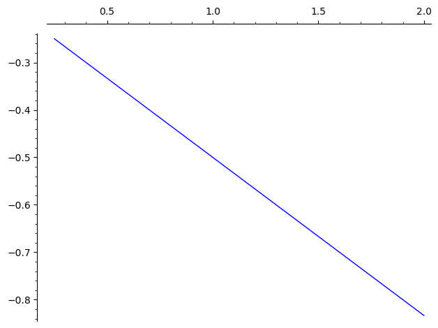
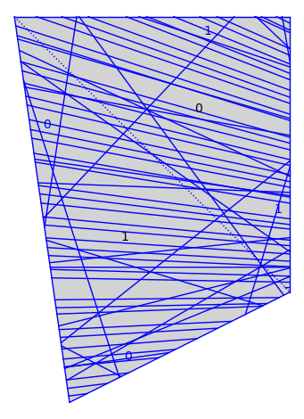

straight_line_trajectory¶
- class flatsurf.graphical.straight_line_trajectory.GraphicalSegmentInPolygon(segment, graphical_surface)[source]¶
Create a graphical segment from a graphical surface and a SegmentInPolygon.
- plot(**options)[source]¶
EXAMPLES:
sage: from flatsurf import similarity_surfaces sage: s = similarity_surfaces.example() sage: v = s.tangent_vector(0, (1,-0.5), (3,-1)) sage: from flatsurf.geometry.straight_line_trajectory import SegmentInPolygon sage: seg = SegmentInPolygon(v) sage: from flatsurf.graphical.straight_line_trajectory import GraphicalSegmentInPolygon sage: gseg = GraphicalSegmentInPolygon(seg, s.graphical_surface()) sage: gseg.plot() ...Graphics object consisting of 1 graphics primitive
sage: gseg.plot(color='red') ...Graphics object consisting of 1 graphics primitive

- class flatsurf.graphical.straight_line_trajectory.GraphicalStraightLineTrajectory(trajectory, graphical_surface=None)[source]¶
Allows for the rendering of a straight-line trajectory through a graphical surface.
- plot(**options)[source]¶
EXAMPLES:
sage: from flatsurf import similarity_surfaces sage: s = similarity_surfaces.example() sage: gs = s.graphical_surface() sage: K.<sqrt2>=NumberField(x^2-2,embedding=1) sage: v = s.tangent_vector(0, (1,-1), (sqrt2,-1),ring=K) sage: traj = v.straight_line_trajectory() sage: traj.flow(100) sage: traj.flow(-5) sage: gtraj = traj.graphical_trajectory(gs) sage: gs.plot() + gtraj.plot() ...Graphics object consisting of 119 graphics primitives
